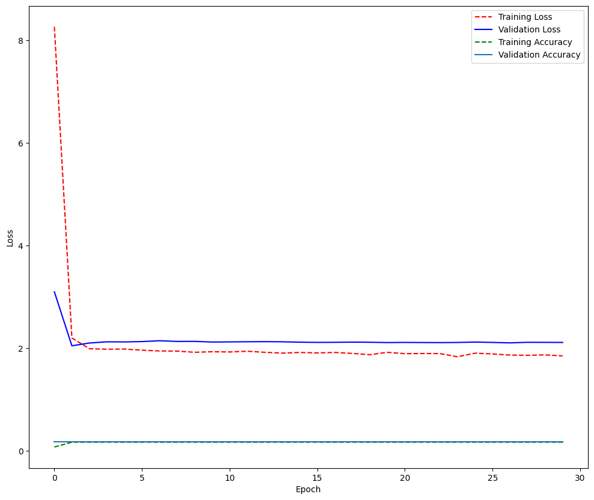

!pip install scikit-surprise
Collecting scikit-surprise
Downloading scikit-surprise-1.1.3.tar.gz (771 kB)
?25l ━━━━━━━━━━━━━━━━━━━━━━━━━━━━━━━━━━━━━━━━ 0.0/772.0 kB ? eta -:--:--
━━━━━╸━━━━━━━━━━━━━━━━━━━━━━━━━━━━━━━━━━ 112.6/772.0 kB 3.3 MB/s eta 0:00:01
━━━━━━━━━━━━━━━━━━━━━╺━━━━━━━━━━━━━━━━━━ 409.6/772.0 kB 6.0 MB/s eta 0:00:01
━━━━━━━━━━━━━━━━━━━━━━━━━━━━━━━━━━━━━╸━━ 727.0/772.0 kB 7.2 MB/s eta 0:00:01
━━━━━━━━━━━━━━━━━━━━━━━━━━━━━━━━━━━━━━━━ 772.0/772.0 kB 6.4 MB/s eta 0:00:00
?25h
Preparing metadata (setup.py) ... ?25l?25hdone
Requirement already satisfied: joblib>=1.0.0 in /usr/local/lib/python3.10/dist-packages (from scikit-surprise) (1.3.2)
Requirement already satisfied: numpy>=1.17.3 in /usr/local/lib/python3.10/dist-packages (from scikit-surprise) (1.23.5)
Requirement already satisfied: scipy>=1.3.2 in /usr/local/lib/python3.10/dist-packages (from scikit-surprise) (1.11.4)
Building wheels for collected packages: scikit-surprise
Building wheel for scikit-surprise (setup.py) ... ?25l?25hcanceled
ERROR: Operation cancelled by user
import pandas as pd
import numpy as np
import keras
from sklearn.metrics import pairwise_distances
from scipy.spatial.distance import cosine, correlation
from surprise import Reader, Dataset, SVD, NormalPredictor, BaselineOnly, KNNBasic, NMF
from surprise.model_selection import cross_validate, KFold ,GridSearchCV , RandomizedSearchCV
from keras.models import Sequential
from keras.callbacks import ReduceLROnPlateau, EarlyStopping
from keras.layers import Input, dot, concatenate
from keras.models import Model
from IPython.display import SVG
from keras.utils import model_to_dot
from keras.layers import Activation, Dense, Dropout, Embedding, Flatten, Conv1D, MaxPooling1D, LSTM
import gc
import matplotlib.pyplot as plt
import seaborn as sns
from datetime import datetime
# import data rating dan panda sebagai data frame
data = pd.read_csv("./tourism_rating.csv")
#data = pd.DataFrame(data, columns=["user", "item", "rating", "timestamp"]).drop(columns=['timestamp'])
from sklearn.model_selection import train_test_split
data = data.sample(frac = 1)
data_train_x = np.array(data[['User_Id' , 'Place_Id']].values)
data_train_y = np.array(data['Place_Ratings'].values)
x_train, x_test, y_train, y_test = train_test_split(data_train_x, data_train_y, test_size = 0.2, random_state = 98)
n_factors = 50
n_users = data['User_Id'].max()
n_movies = data['Place_Id'].max()
user_input = Input(shape=(1,), name='User_Input')
user_embeddings = Embedding(input_dim = n_users+1, output_dim=n_factors, input_length=1,name='User_Embedding')(user_input)
user_vector = Flatten(name='User_Vector') (user_embeddings)
movie_input = Input(shape = (1,) , name = 'Movie_input')
movie_embeddings = Embedding(input_dim = n_movies+1 , output_dim = n_factors , input_length = 1 , name = 'Movie_Embedding')(movie_input)
movie_vector = Flatten(name = 'Movie_Vector')(movie_embeddings)
merged_vectors = concatenate([user_vector, movie_vector], name='Concatenation')
dense_layer_1 = Dense(100 , activation = 'relu')(merged_vectors)
dense_layer_3 = Dropout(.5)(dense_layer_1)
dense_layer_2 = Dense(1)(dense_layer_3)
model = Model([user_input, movie_input], dense_layer_2)
model.compile(loss='mean_squared_error', optimizer='adam' ,metrics = ['accuracy'] )
model.summary()
Model: "model"
__________________________________________________________________________________________________
Layer (type) Output Shape Param # Connected to
==================================================================================================
User_Input (InputLayer) [(None, 1)] 0 []
Movie_input (InputLayer) [(None, 1)] 0 []
User_Embedding (Embedding) (None, 1, 50) 15050 ['User_Input[0][0]']
Movie_Embedding (Embedding (None, 1, 50) 21900 ['Movie_input[0][0]']
)
User_Vector (Flatten) (None, 50) 0 ['User_Embedding[0][0]']
Movie_Vector (Flatten) (None, 50) 0 ['Movie_Embedding[0][0]']
Concatenation (Concatenate (None, 100) 0 ['User_Vector[0][0]',
) 'Movie_Vector[0][0]']
dense (Dense) (None, 100) 10100 ['Concatenation[0][0]']
dropout (Dropout) (None, 100) 0 ['dense[0][0]']
dense_1 (Dense) (None, 1) 101 ['dropout[0][0]']
==================================================================================================
Total params: 47151 (184.18 KB)
Trainable params: 47151 (184.18 KB)
Non-trainable params: 0 (0.00 Byte)
__________________________________________________________________________________________________
SVG(model_to_dot( model, show_shapes=True, show_layer_names=True).create(prog='dot', format='svg'))
history = model.fit(x = [x_train[:,0] , x_train[:,1]] , y =y_train , batch_size = 128 , epochs = 30 , validation_data = ([x_test[:,0] , x_test[:,1]] , y_test))
Epoch 1/30
63/63 [==============================] - 4s 8ms/step - loss: 8.2631 - accuracy: 0.0759 - val_loss: 3.1002 - val_accuracy: 0.1725
Epoch 2/30
63/63 [==============================] - 0s 4ms/step - loss: 2.2008 - accuracy: 0.1701 - val_loss: 2.0481 - val_accuracy: 0.1725
Epoch 3/30
63/63 [==============================] - 0s 5ms/step - loss: 1.9909 - accuracy: 0.1701 - val_loss: 2.1024 - val_accuracy: 0.1725
Epoch 4/30
63/63 [==============================] - 0s 4ms/step - loss: 1.9814 - accuracy: 0.1701 - val_loss: 2.1256 - val_accuracy: 0.1725
Epoch 5/30
63/63 [==============================] - 0s 4ms/step - loss: 1.9846 - accuracy: 0.1701 - val_loss: 2.1235 - val_accuracy: 0.1725
Epoch 6/30
63/63 [==============================] - 0s 4ms/step - loss: 1.9629 - accuracy: 0.1701 - val_loss: 2.1305 - val_accuracy: 0.1725
Epoch 7/30
63/63 [==============================] - 0s 4ms/step - loss: 1.9475 - accuracy: 0.1701 - val_loss: 2.1466 - val_accuracy: 0.1725
Epoch 8/30
63/63 [==============================] - 0s 4ms/step - loss: 1.9451 - accuracy: 0.1701 - val_loss: 2.1336 - val_accuracy: 0.1725
Epoch 9/30
63/63 [==============================] - 0s 4ms/step - loss: 1.9218 - accuracy: 0.1701 - val_loss: 2.1344 - val_accuracy: 0.1725
Epoch 10/30
63/63 [==============================] - 0s 4ms/step - loss: 1.9326 - accuracy: 0.1701 - val_loss: 2.1211 - val_accuracy: 0.1725
Epoch 11/30
63/63 [==============================] - 0s 4ms/step - loss: 1.9278 - accuracy: 0.1701 - val_loss: 2.1238 - val_accuracy: 0.1725
Epoch 12/30
63/63 [==============================] - 0s 4ms/step - loss: 1.9423 - accuracy: 0.1701 - val_loss: 2.1268 - val_accuracy: 0.1725
Epoch 13/30
63/63 [==============================] - 0s 4ms/step - loss: 1.9213 - accuracy: 0.1701 - val_loss: 2.1290 - val_accuracy: 0.1725
Epoch 14/30
63/63 [==============================] - 0s 4ms/step - loss: 1.9056 - accuracy: 0.1701 - val_loss: 2.1261 - val_accuracy: 0.1725
Epoch 15/30
63/63 [==============================] - 0s 4ms/step - loss: 1.9182 - accuracy: 0.1701 - val_loss: 2.1186 - val_accuracy: 0.1725
Epoch 16/30
63/63 [==============================] - 0s 4ms/step - loss: 1.9089 - accuracy: 0.1701 - val_loss: 2.1143 - val_accuracy: 0.1725
Epoch 17/30
63/63 [==============================] - 0s 4ms/step - loss: 1.9184 - accuracy: 0.1701 - val_loss: 2.1162 - val_accuracy: 0.1725
Epoch 18/30
63/63 [==============================] - 0s 5ms/step - loss: 1.8997 - accuracy: 0.1701 - val_loss: 2.1195 - val_accuracy: 0.1725
Epoch 19/30
63/63 [==============================] - 0s 4ms/step - loss: 1.8747 - accuracy: 0.1701 - val_loss: 2.1172 - val_accuracy: 0.1725
Epoch 20/30
63/63 [==============================] - 0s 4ms/step - loss: 1.9205 - accuracy: 0.1701 - val_loss: 2.1112 - val_accuracy: 0.1725
Epoch 21/30
63/63 [==============================] - 0s 4ms/step - loss: 1.8952 - accuracy: 0.1701 - val_loss: 2.1138 - val_accuracy: 0.1725
Epoch 22/30
63/63 [==============================] - 0s 4ms/step - loss: 1.8978 - accuracy: 0.1701 - val_loss: 2.1118 - val_accuracy: 0.1725
Epoch 23/30
63/63 [==============================] - 0s 4ms/step - loss: 1.8966 - accuracy: 0.1701 - val_loss: 2.1102 - val_accuracy: 0.1725
Epoch 24/30
63/63 [==============================] - 0s 4ms/step - loss: 1.8347 - accuracy: 0.1701 - val_loss: 2.1131 - val_accuracy: 0.1725
Epoch 25/30
63/63 [==============================] - 0s 4ms/step - loss: 1.9044 - accuracy: 0.1701 - val_loss: 2.1209 - val_accuracy: 0.1725
Epoch 26/30
63/63 [==============================] - 0s 4ms/step - loss: 1.8898 - accuracy: 0.1701 - val_loss: 2.1139 - val_accuracy: 0.1725
Epoch 27/30
63/63 [==============================] - 0s 4ms/step - loss: 1.8673 - accuracy: 0.1701 - val_loss: 2.1050 - val_accuracy: 0.1725
Epoch 28/30
63/63 [==============================] - 0s 4ms/step - loss: 1.8628 - accuracy: 0.1701 - val_loss: 2.1161 - val_accuracy: 0.1725
Epoch 29/30
63/63 [==============================] - 0s 4ms/step - loss: 1.8707 - accuracy: 0.1701 - val_loss: 2.1151 - val_accuracy: 0.1725
Epoch 30/30
63/63 [==============================] - 0s 4ms/step - loss: 1.8518 - accuracy: 0.1701 - val_loss: 2.1137 - val_accuracy: 0.1725
loss , val_loss , accuracy , val_accuracy = history.history['loss'],history.history['val_loss'],history.history['accuracy'],history.history['val_accuracy']
plt.figure(figsize = (12,10))
plt.plot( loss, 'r--')
plt.plot(val_loss, 'b-')
plt.plot( accuracy, 'g--')
plt.plot(val_accuracy,'-')
plt.legend(['Training Loss', 'Validation Loss' , 'Training Accuracy' , 'Validation Accuracy'])
plt.xlabel('Epoch')
plt.ylabel('Loss')
plt.show()

score = model.evaluate([x_test[:,0], x_test[:,1]], y_test)
print(np.sqrt(score))
63/63 [==============================] - 0s 2ms/step - loss: 2.1137 - accuracy: 0.1725
[1.4538433 0.41533119]
df_n_ratings = pd.DataFrame(data.groupby('Place_Id')['Place_Ratings'].mean())
df_n_ratings['total ratings'] = pd.DataFrame(data.groupby('Place_Id')['Place_Id'].count())
df_n_ratings.rename(columns = {'rating': 'mean ratings'}, inplace=True)
df_n_ratings.sort_values('total ratings', ascending=False).head(10)
| Place_Ratings | total ratings | |
|---|---|---|
| Place_Id | ||
| 177 | 3.153846 | 39 |
| 298 | 2.769231 | 39 |
| 437 | 3.289474 | 38 |
| 201 | 3.108108 | 37 |
| 208 | 3.333333 | 36 |
| 244 | 3.147059 | 34 |
| 167 | 3.323529 | 34 |
| 29 | 2.636364 | 33 |
| 344 | 2.787879 | 33 |
| 336 | 3.303030 | 33 |
plt.figure(figsize=(8,4))
sns.distplot(df_n_ratings['total ratings'], bins=20)
plt.xlabel('Total Number of Ratings')
plt.ylabel('Probability')
plt.show()
<ipython-input-12-bea5023d69ce>:2: UserWarning:
`distplot` is a deprecated function and will be removed in seaborn v0.14.0.
Please adapt your code to use either `displot` (a figure-level function with
similar flexibility) or `histplot` (an axes-level function for histograms).
For a guide to updating your code to use the new functions, please see
https://gist.github.com/mwaskom/de44147ed2974457ad6372750bbe5751
sns.distplot(df_n_ratings['total ratings'], bins=20)
plt.figure(figsize=(8,4))
sns.distplot(df_n_ratings['Place_Ratings'], bins=30)
plt.xlabel('Mean Ratings')
plt.ylabel('Probability')
plt.show()
<ipython-input-15-c8f7dd8d8240>:2: UserWarning:
`distplot` is a deprecated function and will be removed in seaborn v0.14.0.
Please adapt your code to use either `displot` (a figure-level function with
similar flexibility) or `histplot` (an axes-level function for histograms).
For a guide to updating your code to use the new functions, please see
https://gist.github.com/mwaskom/de44147ed2974457ad6372750bbe5751
sns.distplot(df_n_ratings['Place_Ratings'], bins=30)

sns.jointplot(x = 'Place_Ratings', y = 'total ratings', data = df_n_ratings )
<seaborn.axisgrid.JointGrid at 0x7aa3c6773dc0>